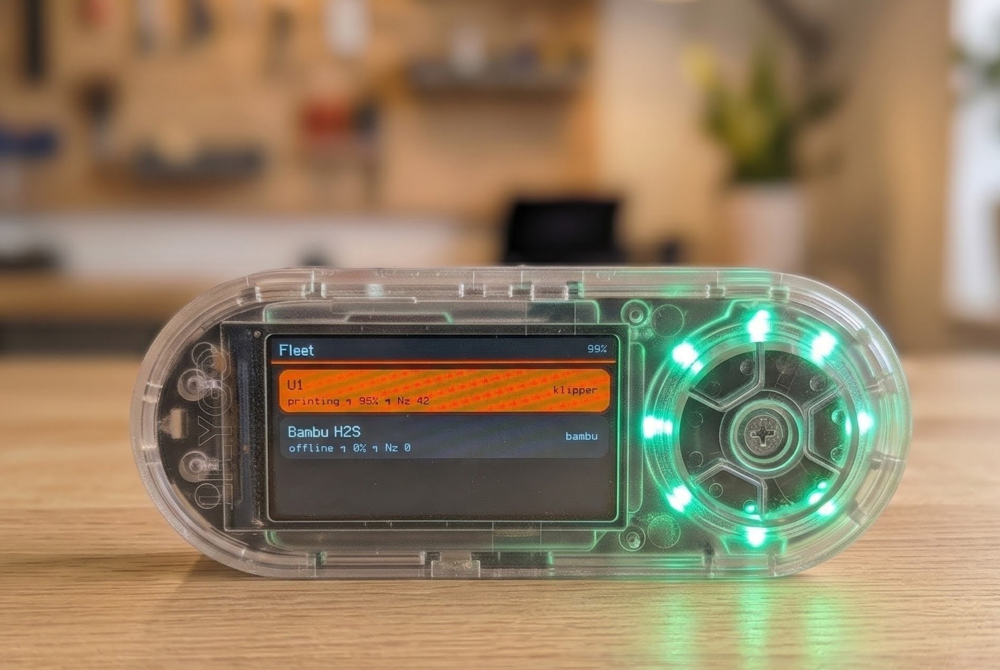
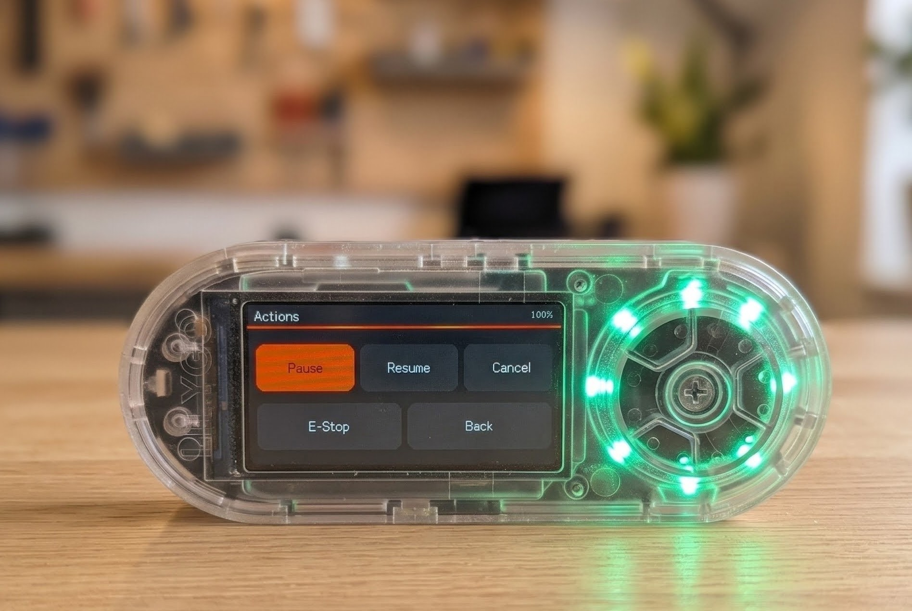

T-Print
LilyGO T‑Embed companion
Pocket remote for your 3D printers
Monitor and control Klipper, Bambu, and Prusa from a LilyGO T‑Embed — flash the firmware here in one click.




What it is
A pocket companion for your print farm
T‑Print is open firmware for the LilyGO T‑Embed CC1101. It turns that handheld into a dedicated remote for your 3D printers — status at a glance, encoder controls for pause / resume / cancel / e‑stop, and optional camera snapshots. Setup happens on the device over Wi‑Fi; nothing is sent to a cloud account.
Multi-printer
Talks to Klipper (Moonraker), Bambu Lab LAN MQTT, and PrusaLink — keep a mixed fleet on one screen.
Encoder UI
Flip through status, job details, and camera pages. Long-press to go back; confirm before cancel or e‑stop.
On-device setup
Join the T‑Print SoftAP, pick your home Wi‑Fi, add printers in the browser — then open the LAN IP on your phone.
Install
Flash your T‑Embed
Use Chrome or Edge on a desktop. Plug in USB‑C, then install the latest firmware from this page.
-
Plug in the T‑Embed over USB‑C (Chrome or Edge on desktop). -
Install firmware, then connect your phone to T-Print Wi‑Fi. -
Open http://192.168.4.1, join your home Wi‑Fi, then reopen setup from the IP shown on the device.
Icons from Iconify mdi. After flashing, setup stays on-device — no cloud account. Source: github.com/TechJeeper/t-print.